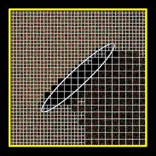
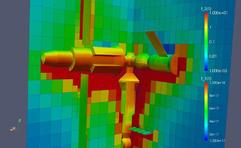

adapt_grid command
Syntax:
adapt_grid group-ID action1 action2 style args ... keyword args ...
group-ID = group ID for which grid cells adaptation will be attempted on
action1 = refine or coarsen
action2 = coarsen or refine, optional
style = particle or surf or value or random
particle args = rthresh cthresh
rcount = threshold in particle count for refinment
ccount = threshold in particle count for coarsening
surf arg = surfID ssize
surfID = group ID for which surface elements to consider
ssize = do not refine to create cells smaller than ssize (dist units)
coarsen only if child cells are smaller than ssize (dist units)
value args = c_ID/c_ID[N]/f_ID/f_ID[N] rthresh cthresh
c_ID = ID of a compute that calculates a per grid vector, use values from vector
c_ID[N] = ID of a compute that calculates a per grid array, use values from Nth column of array
f_ID = ID of a fix that calculates a per grid vector, use vector
f_ID[N] = ID of a fix that calculates a per grid array, use Nth column of array
rvalue = threshold in value for refinement
cvalue = threshold in value for coarsening
random args = rfrac cfrac
rfrac = fraction of child cells to refine
cfrac = fraction of parent cells to coarsen
zero or more keyword/args pairs may be appended
keyword = iterate or maxlevel or minlevel or thresh or combine or cells or region or dir
iterate arg = niterate
niterate = number of iterations of action loop
maxlevel arg = Nmax
Nmax = do not refine to create child cells at a level > Nmax
minlevel arg = Nmin
Nmin = do not coarsen to create child cells at a level < Nmin
thresh args = rdecide cdecide
rdecide = less or more = refine when value is less or more than rvalue
cdecide = less or more = coarsen when value is less or more than cvalue
combine arg = sum or min or max = how to combine child values into parent value
cells args = Nx Ny Nz
Nx,Ny,Nz = refine a cell into Nx by Ny by Nz child cells
region args = regID rflag
regID = ID of region that cells must be inside to be eligible for adaptation
rflag = all or one or center = what portion of grid cell must be inside
dir args = Sx Sy Sz
Sx,Sy,Sz = vector components used with style surf to test surf elements
file arg = filename
filename = name of file to write out with new parent grid info
Examples:
adapt_grid all refine particle 50 10
adapt_grid all coarsen particle 50 10
adapt_grid all refine coarsen particle 50 10
adapt_grid all refine surf all 0.15 iterate 1 dir 1 0 0
adapt_grid all refine coarsen value c_1[1] 5.0 10.0 iterate 2
Description:
This command perform a one-time adaptation of grid cells within a grid cell group, either by refinement or coarsening or both. This command can be invoked as many times as desired, before or between simulation runs. Grid adaptation can also be performed on-the-fly during a simulation by using the fix adapt command.
Refinement means splitting one child cell into multiple new child cells. The original child cell disappears, conceptually it becomes a parent cell. Coarsening means combining all the child cells of a parent cell, so that the child cells are deleted and the parent cell becomes a single new child cell. See Section howto 6.8 for a description of the hierarchical grid used by SPARTA and definitions of child and parent cells.
Grid adaptation can be useful for adjusting the grid cell sizes to the current density distribution, or mean-free-path of particles, or to other simulation attributes such as the presence of surface elements. A well-adapted grid can improve accuracy of the simulation and/or reduce a simulation's computational cost.
Only grid cells in the grid group specified by group-ID are eligible for refinement. A parent grid cell is only eligible for coarsening if all its child cells are in the specified grid group. See the group grid command for info on how grid cells can be assigned to grid groups. Note that the grid group assignment is transferred to new refined or coarsened cells, so that new cells remain eligible for adaptation if the adapt_grid command is invoked again or successive adaptations are performed via the fix adapt command.
The action1 and action2 parameters determine whether refinement or coarsening is performed and in what order. Action2 is optional. If not specified, only action1 is performed. Note that cells which are refined by action1 are not eligible for subsequent coarsening by action2, during a single invocation of this command. Likewise cells that are coarsened by action1 are not eligible for subsequent refinement by action2. This is also true if the iterate keyword is used to loop over the two actions multiple times. Cells can be successivly refined on each iteration, but will never be coarsened. Likewise cells can be successivly coarsensed, but will never be refined. Of course any cell may be refined or coarsened later if the adapt_grid command is used again, including on later timesteps via the fix adapt command.
Examples of 2d and 3d refined grids are shown here. The 3d simulation shows 2d planar cuts through the 3d grid. Click on either image for a larger version.




The first step in a refinement action is to determine what child cells are eligible for refinement. Child cells that are wholly inside a closed surface are not eligible. The maxlevel and region keywords also affect eligibility. They are described below.
The first step in a coarsening action is to determine what parent cells are eligible for coarsening. Only parent cells whose children are all child cells are eligible. If one or more of their children are also parent cells, then the parent cell is a "grandparent" and is not eligible for coarsening. The minlevel and region keywords also affect eligibility. They are described below.
The style parameter is then used to decide whether to refine or coarsen each eligible grid cell. The operation of the different styles is described in the next section. Note that for refinement, the number of new child cells created withing a single cell is set by the cells keyword which defaults to 2x2x2 for 3d models and 2x2x1 for 2d models.
Note that many of the style take an argument for both refinement and coarsening, e.g. rcount and ccount for style particle. Both arguments must be specified, though one or the other will be ignored if the specified actions do not include refinement or coarsening.
The particle style adapts based on the number of particles in a grid cell. For refinement, if the current number (on this timestep) is more than rcount, the cell is refined. For coarsening, if the sum of the current number of particles in all child cells of the parent cell is less than ccount, the parent cell is coarsened. Note that if you wish to use time-averaged counts of particles in each cell you should use the value style with the ID of a fix ave/grid command that time-averages particle counts from the compute grid command.
The surf style adapts only if a grid cell contains one or more surface elements in the specified surfID group. The dir keyword can be used to exclude additional surface elements. For refinement, the cell is refined unless the refinement will create child cells with any of their dimensions smaller than the specified ssize. For coarsening, the parent cell is coarsened only if any of the child cell dimensions is smaller than the specified ssize.
The value style uses values calculated by a compute or fix to decide whether to adapt each cell. The fix or compute must calculate per-grid values as described in Section howto 6.4. If the compute or fix calculates a vector of such values, it is specified as c_ID or f_ID. If it calculates an array of such values, it is specified as c_ID[N] or f_ID[N] when N is the column of values to use, from 1 to Ncolumns.
For refinement, if the compute or fix value for the grid cell is "more" than rvalue, the cell is refined. For coarsening, if the "sum" of the compute or fix values in all child cells of the parent cell is "less" than cvalue, the parent cell is coarsened. The thresh keyword can be used to change the refinment or coarsening criteria to "less" versus "more". Likewise the combine keyword can be used to change the "sum" of child cell values to be a "min" or "max" operation.
Here is an example using particle count as calculated by the compute grid command as an adaptation criterion. A cell will be refined if its count > 25, and a parent cell coarsened if the sum of its children cell counts < 10.
compute 1 grid all n nrho
adapt_grid refine coarsen value c_1[1] 25 10
The same thing could be accomplished with this command:
adapt_grid refine coarsen particle 25 10
These commands use a time-averaged particle count as an adaptation criterion in the same manner:
compute 1 grid all n nrho
fix 1 ave/grid 10 100 1000 c_1[1]
run 1000 # run to accumulate time averages
adapt_grid refine coarsen value f_1[1] 25 10
Here is an example using mean-free path (MFP) as calculated by the compute lambda/grid command as an adaptation criterion. Note the use of "thresh less more" to refine when MFP is less than the specified threshold (0.05).
compute 1 lambda/grid f_1[2] NULL N2 kall
adapt_grid refine coarsen value c_1[2] 0.05 0.1 &
combine min thresh less more
The random style is provided for test and debugging purposes. For each cell eligible for adaptation, a uniform random number RN bewteen 0.0 and 1.0 is generated. For refinement, the cell is refined if RN < rfrac, so that approximately an rfrac fraction of the child cells are refined. Similarly, for coarsening, the parent cell is coarsened if RN < cfrac, so that approximately a cfrac fraction of the parent cells are coarsened.
Various optional keywords can also be specified.
The iterate keyword determines how many times the action1 and action2 operations are looped over. The default is once. If multiple iterations are used, cells can be recursively refined or coarsened. If no further refinement or coarsening occurs on an iteration, the loop ends. Note that the compute used with style value will be recalculated at each iteration to accurately reflect per grid values for the current grid.
The maxlevel keyword limits how far a grid cell can be refined. See Section howto 6.8 for a definition of the level assigned to each parent and child cell. Child cells with a level >= Nmax are not eligible for refinement. The default setting of Nmax = 0 means there is no limit on refinement.
The minlevel keyword limits how far a grid cell can be coarsened. See Section howto 6.8 for a definition of the level assigned to each parent and child cell. Parent cells with a level < Nmin are not eligible for coarsening. The default setting of Nmin = 1 means the only limit on coarsening is that the first level grid is preserved (never coarsened to a single root cell). The specified Nmin must be >= 1.
The thresh keyword is only used by style value. It sets the comparison criterion for refinement as rdecide = less or more. This means a child cell is refined if its compute or fix value is less or more than rvalue. Similarly, it sets the comparison criterion for coarsening as cdecide = less or more. This means a parent cell is coarsened if the compute or fix value accumulated from the compute or fix values of its children is less or more than cvalue.
The combine keyword is only used by style value. It determines how the compute or fix value for a parent cell is accumulated from the compute or fix values of all its children. If the setting is sum, the child values are summed. If it is min or max, the parent value is the minimum or maximum of all the child values.
The cells keyword determines how many new child cells are created when a single grid cell is refined. Nx by Ny by Nz new child cells are created. Nz must be one for 2d. Any of Nx, Ny, Nz may have a value of 1, but they cannot all be 1.
The region keyword can be used to limit which grid cells are eligible for adapation. It applies to both child cells for refinment and parent cells for coarsening. The ID of the geometric region is speficied as regID. See the region command for details on what kind of geometric regions can be defined. Note that the side option for the region command can be used to define whether the inside or outside of the geometric region is considered to be "in" the region.
The grid cell must be in the region to be eligible for adaptation. The rflag setting determines how a grid cell is judged to be in the region or not. For rflag = one, it is in the region if any of its corner points (4 for 2d, 8 for 3d) is in the region. For rflag = all, all its corner points must be in the region. For rflag = center, the center point of the grid cell must be in the region.
The dir keyword is only used by the style surf. The Sx,Sy,Sz settings are components of a vector. It's length does not matter, just its direction. Only surface elements whose normal is opposed to the vector direction (in a dot product sense) are eligible surfaces for the adapation procedure described above for the surf style. This can be useful to exclude refinement around surface elements that are not facing "upwind" with respect to the flow direction of the particles. This is accomplished by setting Sx,Sy,Sz to the flow direction. If Sy,Sy,Sz = (0,0,0), which is the default, then no surface elements are excluded.
The file keyword triggers output of the adapted grid to the specified filename. The format of the file is the same as that created by the write_grid command, which is a list of parent cells. The file can be read in by a subsequent simulation to define a grid, or used by visualization or other post-procesing tools. Note that no file is written if no grid cells are refined or coarsened.
If the filename contains a "*" wildcard character, then the "*" is replaced by the current timestep. This is useful for the fix adapt command, if you wish to write out multiple grid files, each time the grid iadapts.
If the grid is partitioned across processors in a "clumped" manner before this command is invoked, it will still be clumped by processor after the adaptation. Likewise if it is not clumped before, it will remain un-clumped after adaptation. See Section howto 6.8 for a description clumped and unclumped grids.
If you want the grid partitioning (and their particles) to be rebalanced across processors after grid adaptation, you can use the balance_grid command after this command.
Restrictions:
This command can only be used after the grid has been created by the create_grid, read_grid, or read_restart commands.
Currently a fix cannot be used with style value for iterate > 1. This is because the per-grid cell values accumulated by the fix are not interpolated to new grid cells so that the fix can be re-evaluated multiple times. In the future we may revove this restriction.
Currently, if there are custom attributes defined for grid cells, grid adaptation does not set new values for new grid cells created when either refinement or coarsening takes place. The new cells will have zero values for their attributes. This is because there is no simple way to determine how new attribute values should be computed. This may be changed in the future.
Related commands:
Default:
The keyword defaults are iterate = 1, minlevel = 1, maxlevel = 0, thresh = more for rdecide and less for cdecide, combine = sum, cells = 2 2 2 for 3d and 2 2 1 for 2d, no region, dir = 0 0 0, and no file.